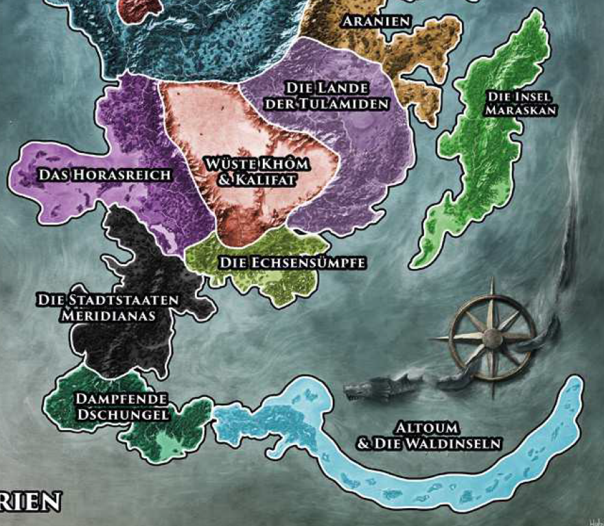

Legendär ist die Vielfalt der Waren auf den Basaren der Tulamidenlande, vielgerühmt die Kunst der Zaubertänzerinnen und die Geschichten von Dschinnenmacht, gewitzten Helden und majestätischen Zaubersultanen, mit denen die Geschichtenerzähler die Zuhörer in ihren Bann ziehen.
An den Ufern des Mhanadi und seiner Nebenflüsse (besonders des Gadang) lebt ein temperamentvoller Menschenschlag, der sich besonders durch sein gebräunten Teint, das überwiegend dunkle Haar und die äußerst blumige Sprache von den Nachfahren der güldenländischen Einwanderer unterscheidet. Das Mhanadital ist ein besonders fruchtbarer Landstrich. Reis und andere Feldfrüchte gedeihen hier besonders gut, es gibt Obst in Hülle und Fülle und die Äcker sind so ertragreich, dass sie die Bewohner der mächtigen Städte ernähren können. Die größte davon ist Fasar, ein brodelnder Schmelztiegel der Völker und älteste Menschenstadt Aventuriens, die nicht nur aufgrund ihrer sagenhaft reichen Erhabenen, sondern auch wegen ihrer finsteren Magierakademie bekannt ist. Weitere Städte am Mhanadi sind Mherwed, das überwigend von rastullahgläubigen Novadis bewohnt wird, das märchenhafte Rashdul sowie Khunchom, das auf echsischen Ruinen errichtet worden sein soll. Auf einem Hochplatteau am Rande Araniens liegt die Gorische Wüste, deren roter Sand bei starkem Wind bis nach Mherwed getragen wird. Nur wenige überleben eine Reise an diesen lebensfeindlichen Ort. Ein ebenfalls vornehmlich von Tulamiden besideltes Gebiet sind die Täler der Flüsse Thalusim und Ongalo, wo die strange Grundherrschaft häufig Aufstände hervorruft und Räuberbanden ihr Unwesen treiben.